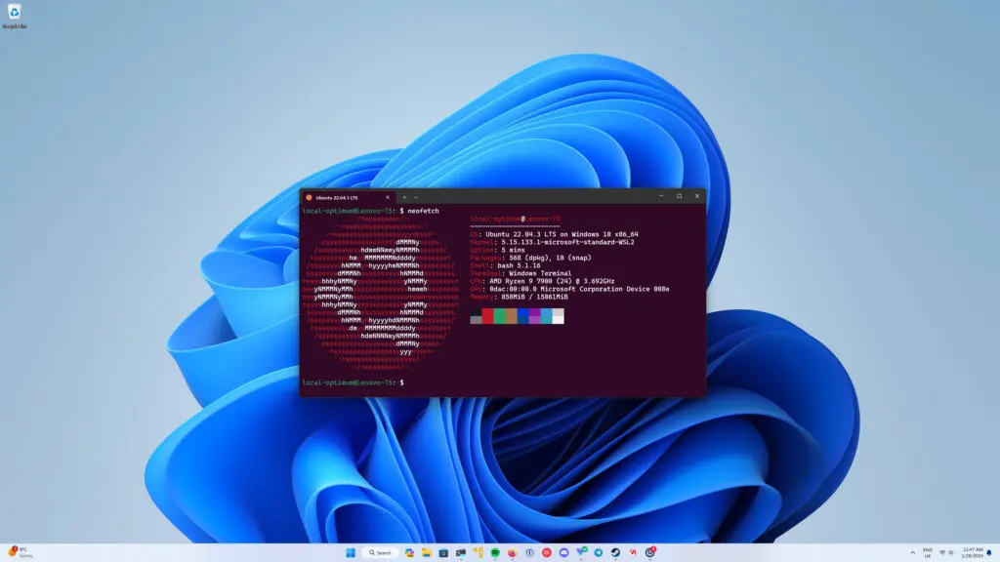
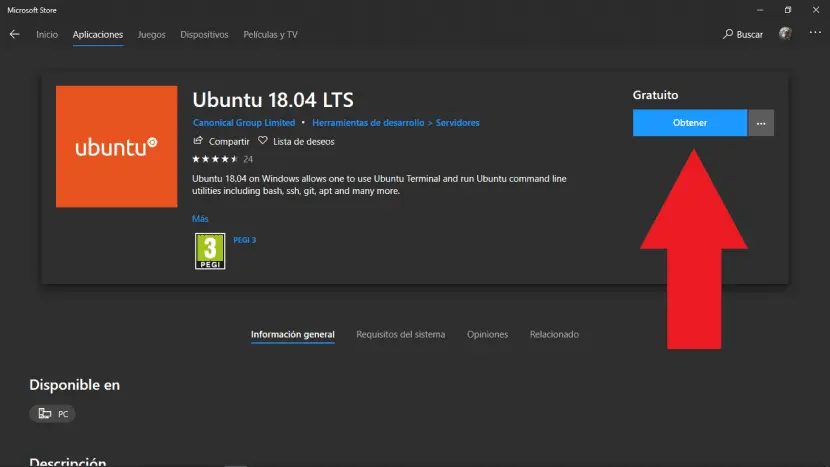

Windows WSL で Linux をインストール
WSL（Windows Subsystem for Linux）これは Microsoft が Windows ユーザー向けに提供するサブシステムで、Windows 上で Linux をネイティブに実行できます（仮想マシンでもデュアルブートでもありません）。Bash、apt、gcc、Python、Node.js などの Linux ツールを直接使用できます。

WSL のバージョン違い
| 特徴 | WSL1 | WSL2 |
|---|---|---|
| カーネルアーキテクチャ | システムコールを変換（互換レイヤー） | 本物の Linux カーネル（軽量仮想マシン） |
| パフォーマンス（ファイルアクセス） | Windows ↔ Linux 間のアクセスが高速 | Linux ↔ Linux 内部のアクセスが高速 |
| 起動速度 | より高速 | やや遅い |
| Docker サポート | 非対応 | ✅ 完全対応 |
| システムリソース使用量 | 少なめ | やや高め |
推奨WSL2、こちらは互換性が高く、機能もより完全です。
インストール手順（WSL2 を例に）
前提条件
- Windows 10 2004（またはそれ以降） / Windows 11
- 仮想化を有効にする（BIOS で VT-x または AMD-V をオン）
方法1：ワンクリックインストール（推奨）
wsl --install
このコマンドは自動的に以下を実行します：
- WSL 機能を有効化
- WSL2 カーネルをインストール
- デフォルトの Ubuntu をインストール
- WSL2 に設定
インストール完了後、システムを一度再起動するだけです。
方法2：手動インストール（カスタマイズ向け）
1、WSL 機能と仮想マシンプラットフォームを有効にする
dism.exe /online /enable-feature /featurename:Microsoft-Windows-Subsystem-Linux /all /norestart dism.exe /online /enable-feature /featurename:VirtualMachinePlatform /all /norestart
2、Linux カーネル更新パッケージをダウンロードしてインストールする
👉 ダウンロード先：https://aka.ms/wsl2kernel
3、デフォルトの WSL バージョンを WSL2 に設定する
wsl --set-default-version 2
4、Microsoft Store から Linux ディストリビューション（Ubuntu など）をインストールする

コマンドラインでのインストールも可能です：
wsl --install -d Ubuntu
よく使うコマンド早見表
| コマンド | 説明 |
|---|---|
wsl |
デフォルトの Linux を起動 |
wsl --list --verbose |
インストール済みのディストリビューションとバージョンを確認 |
wsl --set-version Ubuntu 2 |
Ubuntu を WSL2 で使用するよう設定 |
wsl --install -d Debian |
指定したディストリビューションをインストール |
wsl --shutdown |
すべての WSL インスタンスをシャットダウン |
wsl -e bash |
Bash で Linux シェルを起動 |
日常利用ガイド
Windows のファイルにアクセスするには？
WSL では、Windows のファイルは /mnt/c、/mnt/d などのディレクトリにマウントされています：
cd /mnt/c/Users/你的用户名/Desktop
WSL のファイルにアクセスするには？
Windows からアクセスする場合：
\\wsl$\Ubuntu\home\your_username
またはエクスプローラーのアドレスバーに入力します：\\wsl$
おすすめの関連ツール
| ツール | 説明 |
|---|---|
| Windows Terminal | マルチタブターミナル、カラー表示とカスタム設定に対応 |
| VS Code + Remote WSL | VS Code で Linux ファイルを直接編集 |
| oh-my-zsh / fish | ターミナルを美化し、操作性を向上 |
| tmux / screen | マルチターミナル管理ツール |
アンインストールまたはリセット方法は？
# 卸载某个 Linux 发行版 wsl --unregister Ubuntu # 重置 WSL 所有数据（危险操作） wsl --unregister <发行版名>その他の拡張